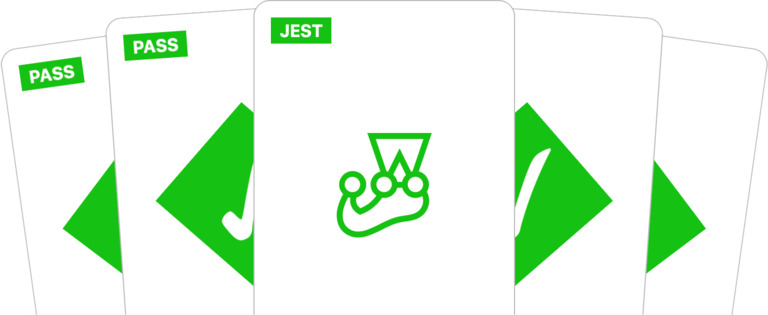

Jest es un framework para realizar pruebas unitarias de JavaScript, enfocado en la simplicidad.
Jest ha sido desarrollado por el equipo de Facebook y, aunque nace en el contexto de React, es un framework de testing generalista que podemos utilizar en cualquier situación. Puede ser usado con proyectos que usen Babel, TypScript, Node.js, React, Angular y Vue.js
Para instalar Jest hay que ejecutar el siguiente comando:
npm install --save-dev jest
Para entender cómo usar Jest, usaremos de ejemplo la siguiente función:
function sum(a, b) {
return a + b;
}
module.exports = sum;
Si la anterior función estuviera dentro de un archivo llamado sum.js, escribiremos nuestro test en un archivo llamado sum.test.js para que jest lo coja automáticamente. El contenido sería el siguiente:
const sum = require('./sum');
test('adds 1 + 2 to equal 3', () => {
expect(sum(1, 2)).toBe(3);
});
module.exports = sum;
Para ejecutar el test y obtener el resultado en la terminal, debemos ejecutar el siguiente comando:
npm run test
La documentación oficial de Jest ofrece información muy completa para entender bien todas sus características. Puedes cosultar la página web haciendo click aquí.